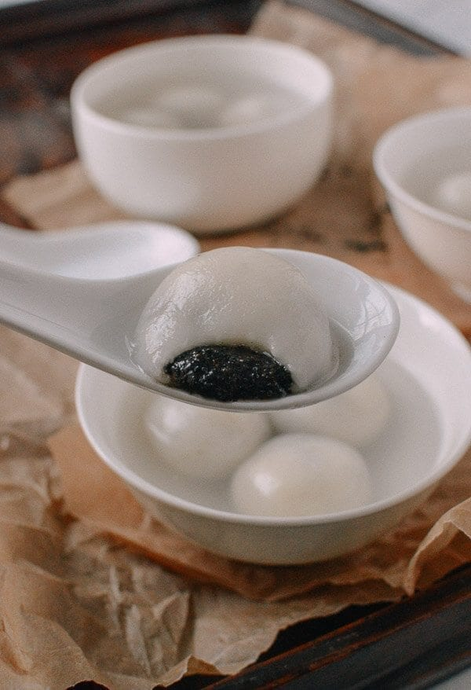

China
Tang Yuan

Description
Glutinous rice balls, delicious soft mochi type of dessert (or savory meal) originated in China
Ingredients
Rice Balls
- 1-1/2 Cups Glutinous Rice Long grain or short grain, or a mix of both
- Corn Starch
Ginger Syrup
- 6 Cups Water
- 6 tbsp Brown Sugar
- 1 Inch Ginger Thinly Sliced
Steps
Rice Balls
- Cover 1-1/2C Glutinous Rice with water and soak over night
- Blend the soaked rice with a blender for about 3 minutes, or until there are no big grains left. It doesn't really matter how much water you add to blend the rice since it will be drained later, as long as it is easy to blend.
- After the rice is blended, use a cheese cloth or in my case I used a laundry bag to drain the rice milk.
- Tie the bag up, put it on top of a rack and loaded a plate and something very heavy on top. Leave draining over night or for 8 hours, flipping over half way. Creating a "rice cake"
- Remove the "rice cake" from the bag and break into small pieces in a mixing bowl.
- While parts of the rice cake is being boiled, crumble up the rest of the raw rice cake.
- Strain the cooked rice cake from the pot and add them back to the crumbled raw pieces.
- Start working it all into a dough.
- After the dough is made, separate 1/3 of the dough and add 1bsp of beet juice or color of your choice to make a colored dough.
- Form the dough into little balls with your palm. Coating them with corn starch to prevent sticking to each other.
- Cook immediately or freeze. Cooking the glutinous rice balls: Bring a pot of water to boil, add the balls and cook until they float to top, strain the balls into a bowl and add syrup or soup of your choice.
Ginger Syrup
- Bring 6 cups water, 6tbsp Brown sugar, 1" thinly sliced ginger to a boil in a pot. Serve with cooked glutinous rice balls.
Film Pairings